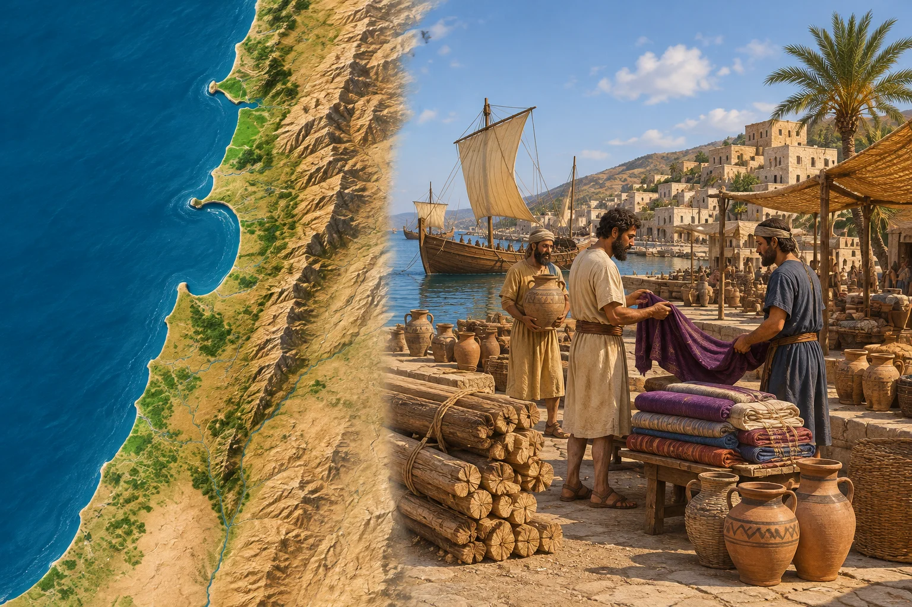

Biblioteca bíblica ilustrada
Da criação à
nova criação.
Leia a Bíblia em ordem cronológica e acompanhe os personagens, os lugares e as histórias de cada época.
Em destaque
A travessia do mar · Êxodo 14
Explore o Biblie
Encontre as passagens no leitor e siga os vínculos entre histórias, pessoas e lugares.

Atlas bíblico
1.342 lugares e 44 episódios. Compare as regiões antigas com o mapa atual.

Personagens
Genealogias, conexões e 75 retratos.
Parábolas
48 histórias ilustradas, com narração e palavras sincronizadas.

Mulheres da Bíblia
Passagens e contexto de mulheres do Antigo e do Novo Testamento.
Livros da Bíblia
Texto integral e resumos ilustrados dos 66 livros.
Nenhum livro corresponde à busca.